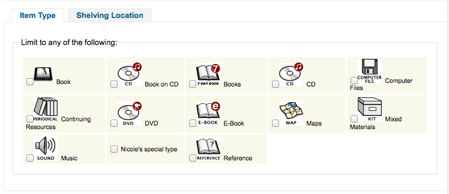

Searching
Get there: More > Administration > Global System Preferences > Searching
Did you mean / Spell checking
LibrisKey
Asks: Swedish service for spellchecking. LIBRIS spellchecking API key ___
Description:
Use this system preference to enable the LIBRIS spellchecking service.
You can obtain you API key at http://api.libris.kb.se/bibspell
LibrisURL
Asks: LIBRIS base URL ___
Default: http://api.libris.kb.se/bibspell/
Description:
This system preference is used to set the base URL for the LIBRIS spellchecking service API
The default value should be the right one. Make sure you only change it if you are sure it needs to be changed
Features
BrowseResultSelection
Default: Disable
Asks: ___ browsing search results fromt the bibliographic record detail page in staff client.
Values:
Disable
Enable
Description:
Enabling this system preference makes a button appear in the intranet search results page to browse the selected records.
EnableSearchHistory
Default: Don’t keep
Asks: ___ patron search history in the staff client.
Values:
Don’t keep
Keep

Description:
This preference controls whether the staff client keeps search history for logged in users. Search history will be accessible under the link to your account in the top right of the staff client.
IncludeSeeFromInSearches
Default: Don’t include
Asks: ___ see from (non-preferred form) headings in bibliographic searches.
Values:
Don’t include
Include
Description:
When this preference is set to include the search engine indexer will insert see from headings from authority records into bibliographic records when indexing, so that a search on an obsolete term will turn up relevant records. For example when you search for cookery (the old term) you get titles with the heading of cooking (the new term).
Important
You will need to reindex your bibliographic database when changing this preference.
QueryAutoTruncate
Default: automatically
Asks: Perform wildcard searching (where, for example, Har would match Harry and harp) ___ (The * character would be used like so: Har* or *logging.)
Values:
automatically
only if * is added
Description:
This setting allows for searches to be automatically truncated or for additional characters to be added to the end of a search string. When set to “automatically” the search string automatically ends with a wildcard function. For example, a search for the word “invent” with auto truncation enabled will also retrieve results for inventor, invention, inventory, etc. If you don’t want this to happen automatically you can still be perform wildcard searches manually by adding an asterisk (*). Typing “invent*” even with auto truncation disabled will retrieve the same inventor, invention, inventory results. Auto truncation bypasses the necessity to type long search strings in their entirety.
QueryFuzzy
Default: Try
Asks: ___ to match similarly spelled words in a search (for example, a search for flang would also match flange and fang)
Values:
Don’t try
Try
Description:
This preference enables “fuzzy” searching, in which the search engine returns results that are similar to, but not exactly matching, the word or words entered by the user. This preference enables the search function to compensate for slightly misspelled names or phrases.
警告
This does not work if ICU is enabled in your system.
QueryRegexEscapeOptions
Asks: ___ regular expressions within strings.
Default: Escape
Values:
Don’t escape
Escape
Unescaped escaped
Important
This system preference is used with Elasticsearch only. If you use Zebra as your SearchEngine, it will not change anything.
Description:
If ‘Escape’ is selected occurences of ‘/’’ in search terms will be automatically escaped, and regular expressions interpreted as regular strings. In other words, regular expressions are disabled and search terms are search as-is (for example, ‘an essential grammar / William Z. Shetter’).
If ‘Unescape escaped’ is selected this will allow writing regular expressions ‘/like this/’’ while ‘/this/’, ‘or/this’ will be escaped and interpreted as regular strings. In other words, use this option if you want to be able to use regular expressions in your search queries.
If ‘Don’t escape’ is selected, the default behavior of the Elasticsearch search engine will be left unaltered. Several characters will be interpreted as being part of a regular expression, such as the forward slash (/).
QueryStemming
Default: Try
Asks: ___ to match words of the same base in a search
Values:
Don’t try
Try
A search for enabling would also match enable and enabled
Description:
This preference enables word stemming. Stemming allows the search function to return multiple versions of the same word, as well as related terms (i.e., both fish and fishing would be returned).
QueryWeightFields
Default: Enable
Asks: ___ ranking of search results by relevance
Values:
Disable
Enable
TraceCompleteSubfields
Default: Force
Asks: ___ subject tracings in the OPAC and Staff Client to search only for complete-subfield matches.
Values:
Don’t force
Searches for subject keywords (example: opac-search.pl?q=su:World%20Wide%20Web)
Force
Searches for complete subject fields (example: opac-search.pl?q=su,complete-subfield:World%20Wide%20Web)
Description:
When TraceCompleteSubfields is set to “force,” clicking on links in non-authority controlled subject tracings will only find other records where the entire subfields match. Leaving it at “don’t force” does a keyword search of the subject indexes.
Important
This preference assumes that you’re using XSLT stylesheets as set in the OPACXSLTDetailsDisplay preference.
TraceSubjectSubdivisions
Default: Include
Asks: ___ subdivisions for searches generated by clicking on subject tracings.
Values:
Don’t include
Searches for subject keywords (example: opac-search.pl?q=su,complete-subfield:%22Web%20sites%22)
Include
Searches for complete subject fields (example: opac-search.pl?q=(su,complete-subfield:%22Web%20sites%22)%20and%20(su,complete-subfield:%22Design.%22))
Description:
When TraceSubjectSubdivisions is set to “Include,” if you click on a subject with subdivisions (subfields other than ‘a’) they will be searched along with the subject heading (subfield ‘a’). To have only the subject heading (subfield ‘a’) searched, set this preference to “Don’t include.”
Important
This preference assumes that you’re using XSLT stylesheets as set in the OPACXSLTDetailsDisplay preference.
UseICUStyleQuotes
Asks: ___ ICU style quotes ({}) when tracing subjects.
Default: Don’t use
Values:
Don’t use
Use
Description:
This sytem preference lets you decide which style of quotes to use when tracing subjects.
If set to “Don’t use”, the regular double quotes (“”) will be used
If set to “Use”, the quotes will be replaced by curly brackets ({})
Results Display
BiblioItemtypeInfo
Default: Don’t display
Asks: ___ Koha record level itemtype info on detail and result pages in the OPAC and staff interface. This info also displays if the item-level_itypes system preference is set to bibliographic record.
Description:
If enabled the icons for the record itemtype (942c) will be displayed on the record detail and search result pages in both the OPAC and staff interface.
defaultSortField and defaultSortOrder
defaultSortField Default: author
defaultSortOrder Default: ascending
Asks: By default, sort search results in the staff client by ___, ___
Description:
These preferences set the default sort field and sort order for searches on the staff side. Regardless of your choice, the other sort options are still available in the drop down list on the advanced search page.
defaultSortField Values:
author
call number
date added
date of publication
relevance
title
total number of checkouts
defaultSortOrder Values:
ascending
descending
from A to Z
from Z to A
displayFacetCount
Default: Don’t show
Asks: ___ facet counts.
Description:
This preference lets you decide if you show how many times a facet is used in your search results in the OPAC and the staff client. The relevance of these numbers highly depends on the value of the maxRecordsForFacets preference. Showing these numbers can potentially effect the performance of your searching, so test your system with different values for this preference to see what works best.
Values:
Don’t show
Show
DisplayLibraryFacets
Default: holding library
Asks: Show facets for ___
Values:
both home and holding library
holding library
home library
Description:
This preferenc controls the libraries facet that displays on search results in the staff and opac. The value selected here will determine which library(s) show in the facets when a search is run.
FacetLabelTruncationLength
Default: 20
Asks: Truncate facets length to ___ characters, in OPAC/staff interface.
Description:
In the OPAC and the staff client your facets are cut off at 20 characters by default. Depending on your layout this may be too many or two few letters, this preference lets you decide what number is best for your library’s design.
FacetMaxCount
Default: 20
Asks: Show up ___ to facets for each category.
Description:
This preference allows you to control how many possible limits show under each heading (Author, Series, Topics, etc) on the facets in the OPAC.
maxItemsInSearchResults
Default: 20
Asks: Show up to ___ items per biblio in the search results
Description:
This preference will let you set how many results display by default when a search is run on the Staff Client.
maxRecordsForFacets
Default: 20
Asks: Build facets based on ___ records from the search results.
Description:
By default Koha only bases facets on the first page of results (usually 20 results). This preference lets you tell Koha to based the facet descriptions and numbers on any number of search results returned. The higher this number the longer it will take for your search results to return, so test with various different values to find the best balance for your library.
MaxSearchResultsItemsPerRecordStatusCheck
Default: 20
Asks: For records with many items, only check the availability status for the first ___ items.
Description:
Availability statuses may show incorrectly in search results if a record has more items than the limit set. Statuses will display correctly in the record details. Leave empty for no limit.
numSearchResults
Asks: By default, show ___ results per page in the staff client.
Default: 20
Description:
This system preference allows you to choose the default number of results per page in search results in the staff interface.
If you want users to be able to change that number, enable the numSearchResultsDropdown system preference.
Use OPACnumSearchResults to define the default number of results per page in the OPAC.
numSearchResultsDropdown
Asks: ___ results per page dropdown on staff client search results.
Default: Don’t show
Values:
Don’t show
Show
Description:
If set to ‘Show’ this system preference will make a drop down menu appear in the search results allowing the user to choose how many results they want to see per page.
Use numSearchResults to determine what is the default value.
Use OPACnumSearchResultsDropdown to define if the dropdown appears in the OPAC.
OPACdefaultSortField and OPACdefaultSortOrder
OPACdefaultSortField Default: relevance
OPACdefaultSortOrder Default: ascending
Asks: By default, sort search results in the OPAC by ___, ___
Description:
These preferences set the default sort field and sort order for searches on the OPAC. Regardless of your choice, the other sort options are still available in the drop down list on the advanced search page.
OPACdefaultSortField Values:
author
call number
date added
date of publication
relevance
title
total number of checkouts
OPACdefaultSortOrder Values:
ascending
descending
from A to Z
from Z to A
OPACItemsResultsDisplay
Default: Don’t show
Asks: ___ an item’s library, location and call number in OPAC search results. results.
Values:
Don’t show
Show
Description:
This setting selects the information about an item that will display in the search results page of the OPAC. The results can display the status of an item and/or full details including branch, location, and call number. While the ‘Show’ option allows for more information to be displayed on the search results page, the information can be overwhelming for large collections with multiple branches.
OPACnumSearchResults
Asks: By default, show ___ results per page in the OPAC.
Default: 20
Description:
This system preference allows you to choose the default number of results per page in search results in the OPAC.
If you want users to be able to change that number, enable the OPACnumSearchResultsDropdown system preference.
Use numSearchResults to define the default number of results per page in the staff interface.
OPACnumSearchResultsDropdown
Asks: ___ results per page dropdown on OPAC search results.
Default: Don’t show
Values:
Don’t show
Show
Description:
If set to ‘Show’ this system preference will make a drop down menu appear in the search results allowing the user to choose how many results they want to see per page.
Use OPACnumSearchResults to determine what is the default value.
Use numSearchResultsDropdown to define if the dropdown appears in the staff interface.
PassItemMarcToXSLT
Asks: ___ make item MARC tags available to XSLT stylesheets.
Default: Don’t
Values:
Don’t
Do
Description:
This system preference determines whether or not the item fields are passed to the XSLT stylesheets for display.
Enable only if using custom XSLT stylesheets that display the items.
If using default XSLT stylesheets, items are not displayed using these stylesheets but through different methods (holdings table), so it is not necessary to make these fields available to the XSLT stylesheets.
Use the following system preferences for custom stylesheets:
If this system preference is disabled, records are displayed faster when using the default XSLT stylesheets.
SearchWithISBNVariations
Default: don’t search
Asks: When searching on the ISBN index, ___ on all variations of the ISBN.
Values:
don’t search
search
Descriptions:
With this preference set to search you’ll be able to search for ISBNs even if there are dashes or spaces in the field. So if you search for 9781843345855 but the ISBN was cataloged as 978-1843345855 you’ll still be able to find it if this preference is set to ‘search’.
Search Form
AdvancedSearchLanguages
Asks: Limit the languages listed in the advanced search drop-down to the ___ ISO 639-2 language codes (separate values with | or ,).
Description:
This preference will allow you to decide what languages show in the pull down menu on the advanced search page in the OPAC and the staff client. If this preference is left blank, all languages will show. To limit the languages that are shown enter their ISO 639-2 language codes separated by comma ( , ) or bar ( | ). For example to limit listing to French and Italian, enter ita|fre.
AdvancedSearchTypes
Default: itemtype
Asks: Show tabs in OPAC and staff-side advanced search for limiting searches on the ___ fields (separate values with |).
Description:
On the advanced search page you can choose to allow filters on one or all of the following: Item types (itemtypes), Collection Codes (ccode) and Shelving Location (loc). If you would like to be able to limit searches on item type and shelving location for example you would enter itemtypes|loc in the preference input box. The order of these fields will determine the order of the tabs in the OPAC and staff client advanced search screens. Values within the search type are OR’ed together, while each different search type is AND’ed together in the query limits. The current stored values are supported without any required modification.Each set of advanced search fields are displayed in tabs in both the OPAC and staff client. The first value in the AdvancedSearchTypes syspref is the selected tab; if no values are present, “itemtypes” is used. For non-itemtype values, the value in AdvancedSearchTypes must match the Authorised Value name, and must be indexed with ‘mc-^ prefixing that name.

expandedSearchOption
Default: don’t show
Asks: By default, ___ “More options” on the OPAC and staff advanced search pages.
Values:
don’t show
show
IntranetNumbersPreferPhrase
Default: don’t use
Asks: By default, ___ the operator “phr” in the callnumber and standard number staff client searches
Values:
don’t use
use
Description:
When searching by call number and standard number (biblionumber) in Koha Staff Client you can choose to force the search to be a phrase search by setting this preference to ‘use.^ This will allow for more accurate results over doing a general keyword field search.
LoadSearchHistoryToTheFirstLoggedUser
Default: Load
Asks: Load the unlogged history to the next user. ___ history to the next client.
Values:
Don’t load
Load
OPACNumbersPreferPhrase
Default: don’t use
Asks: By default, ___ the operator “phr” in the callnumber and standard number OPAC searches
Values:
don’t use
use
Description:
When searching by call number and standard number (biblionumber) in the Koha OPAC you can choose to force the search to be a phrase search by setting this preference to ‘use.^ This will allow for more accurate results over doing a general keyword field search.